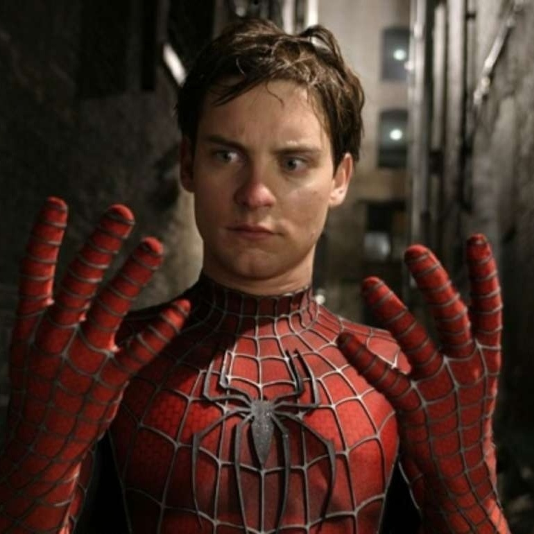
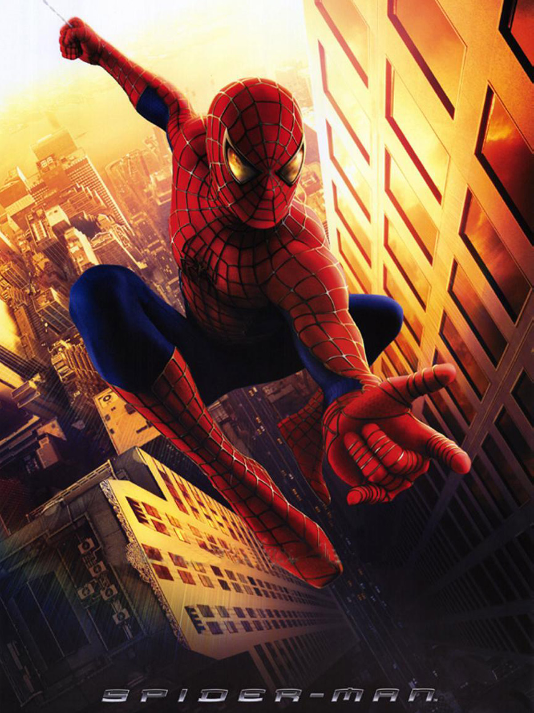

TÓPICOS FALADOS EM NOSSO SITE

Depois de ser picado por uma aranha geneticamente modificada em uma demonstração científica, o jovem nerd Peter Parker ganha superpoderes. Inicialmente, ele pretende usá-los para para ganhar dinheiro, adotando o nome de Homem-Aranha e se apresentando em lutas de exibição. Porém, ao presenciar o assassinando de seu tio Ben e sentir-se culpado, Peter decide não mais usar seus poderes para proveito próprio e sim para enfrentar o mal, tendo como seu primeiro grande desafio o psicótico Duende Verde.
No começo dos anos 2000, o primeiro Homem-Aranha era lançado nos cinemas, provando de uma vez por todas que filmes baseados em super-heróis espalhafatosos de quadrinhos poderiam funcionar nas telonas. É bem verdade que, dois anos antes, o primeiro X-Men havia sido lançado, recebendo boas críticas e gorda bilheteria. No entanto, X-Men – O Filme, de Bryan Singer, por melhor que ele tivesse sido, ainda era uma obra razoavelmente distante da estética dos quadrinhos, sem cores vibrantes e roupas coloridas. O medo, àquela época, era que isso não funcionasse direito perante os espectadores, mesmo considerando os filmes do Superman décadas antes. O Homem-Aranha é um herói que, mesmo que se queira mudar muito sua história de origem e acontecimentos subsequentes, precisava manter algo importantíssimo para sua mística: o uniforme. E temos que convir que as cores vermelha e azul em uma roupa justa cobrindo todo o corpo, com padrões de teia e aranhas no peito e nas costas tinha todas as chances de não funcionar no cinema. No entanto, mudar o uniforme, como Singer fez elegantemente em seu X-Men, significaria que os fãs (e o Homem-Aranha tem várias e várias gerações deles) criariam uma revolta sem precedentes. Não foi à toa, portanto, que Homem-Aranha ficou no chamado development hell por nada mais nada menos que 25 anos. Somente quando a Sony, em 1999, comprou os direitos de adaptação cinematográfica da MGM, que já havia encomendado um rascunho de roteiro de James Cameron, foi que a versão cinematográfica do amigão da vizinhança realmente decolou. Cameron já não estava mais ligado à obra, mas seu trabalho serviu de base ao roteiro que David Koepp (escritor de Missão Impossível e Jurassic Park, dentre vários outros filmes famosos) acabou desenvolvendo. Vários diretores foram pensados para comandar a obra, incluindo Chris Columbus e David Fincher. Mas quando Sam Raimi ingressou no projeto é que ele começou a tomar forma definitiva. Raimi foi firme quanto à estrutura do filme, decidindo-se por apenas um vilão, o Duende Verde, enquanto que a ideia original era usar o Dr. Octopus também, em papel secundário. Da mesma maneira, com Raimi, a mudança mais dramática na mitologia do personagem seria feita: os tradicionais lançadores mecânicos de teia foram substituídos pelos controversos lançadores orgânicos, explicados como parte da mutação que Peter Parker sofreria depois de ser mordido por uma aranha geneticamente alterada. A roupa do Aranha foi mantida a mais próxima possível da original dos quadrinhos. Ela ganhou uma aparência emborrachada e teias em relevo, além de ter sido moldada ao corpo do ator quase que como uma peça só. Assim, a transposição das páginas das revistas para o cinema foi perfeita. Raimi, àquela época mais conhecido por seu trabalho na série Evil Dead, mas que também já havia feito um dos melhores filmes de super-herói (mas sem ser baseado em quadrinhos), Darkman – Vingança Sem Rosto, foi a escolha perfeita. Suas decisões no roteiro foram cruciais para o sucesso do filme e, além disso, trabalhou com uma paleta que cores vibrante, carregada em vermelho, laranja e amarelo, para evitar que os uniformes do herói e do vilão se sobressaíssem de maneira exagerada em relação ao ambiente ao redor e também para fazer a mímica dos multi-coloridos quadrinhos da Casa das Ideias. O resultado, para o mal ou para o bem, foi que toda a fita acabou com um ar fortemente cartunesco, quase que literalmente arrancado do material que a inspirou. O toque final foi o essencial trabalho do veterano John Dykstra, famoso pelos efeitos especiais de Star Wars. A construção digital dos movimentos do aracnídeo talvez hoje pareçam ultrapassados, mas isso se dá apenas porque a tecnologia avança a passos enlouquecedores. O fato, porém, permanece que ele conseguiu fazer a versão cinematográfica, de maneira muito eficiente, dos incríveis saltos e malabarismos do herói. Mas vamos à história por um segundo, como se alguém ainda não a conhecesse. Peter Parker (Tobey Maguire) é mordido por uma aranha geneticamente modificada e ganha poderes impressionantes como super-força e a habilidade de soltar teias e escalar paredes, que, no começo, usa para ganhar dinheiro com lutas livres. Depois de não impedir um assalto e ver seu amado Tio Ben (Cliff Robertson) morrer por força de sua inação, ele decide tornar-se o Homem-Aranha. Seu melhor amigo é Harry Osborn (James Franco), filho de Norman Osborn (Willem Dafoe), um cientista milionário fabricante de armas para o exército americano. Parker tem uma paixão secreta não correspondida por sua vizinha e colega de turma Mary Jane Watson (Kirsten Dunst) e vive com sua Tia May (Rosemary Harris) em um subúrbio de Nova Iorque. As aventuras realmente começam quando Norman Osborn decide experimentar um soro nele mesmo para salvar sua empresa e, no processo, torna-se o enlouquecido Duende Verde. A história de origem é eficientemente estabelecida por Raimi nos primeiro 25 minutos da fita, com o Aranha aparecendo pela primeira vez com o uniforme final aos 50 minutos de projeção. Tudo funciona de maneira muito orgânica no filme ainda que, claro, o tempo necessário para Raimi contar o nascimento do personagem acabe retirando grande parte do potencial de ação da película. Mas a verdade é que Raimi, juntamente com Richard Donner em 1978 e, mais recentemente, Jon Favreau em Homem de Ferro, conta uma das melhores histórias “de origem” de super-heróis, sem deixar o passo esmorecer em momento algum. É uma mistura muito equilibrada entre respeito à obra original, adaptação bem feita e equilíbrio em relação ao resto da projeção. Apesar das atuações insossas de Dunst e Franco, o Peter Parker de Tobey Maguire, parte bobão, parte nerd, parte sobrinho amado, mas integralmente herói, tem uma evolução perfeitamente aceitável durante todo o filme. Willem Dafoe faz o vilão caricato dos quadrinhos da maneira como o papel pede, servindo de contraponto às atitudes mais serenas de Parker. O pecado do design de produção fica mesmo com a armadura, digamos, estilo Power Rangers que o Duende ganhou, mas ela não chega a comprometer o resultado.

TRAILER OFICIAL DO FILME